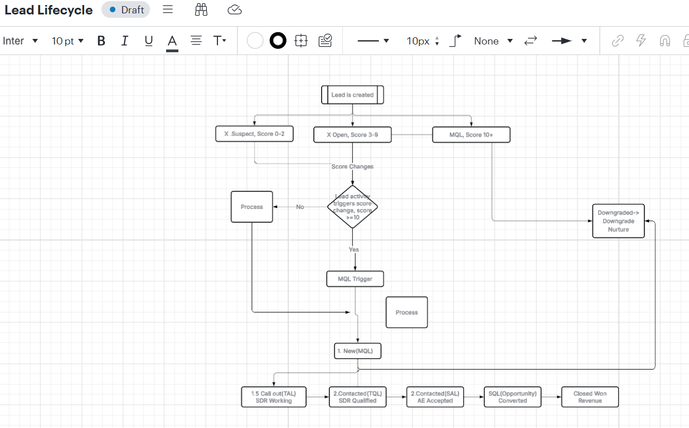
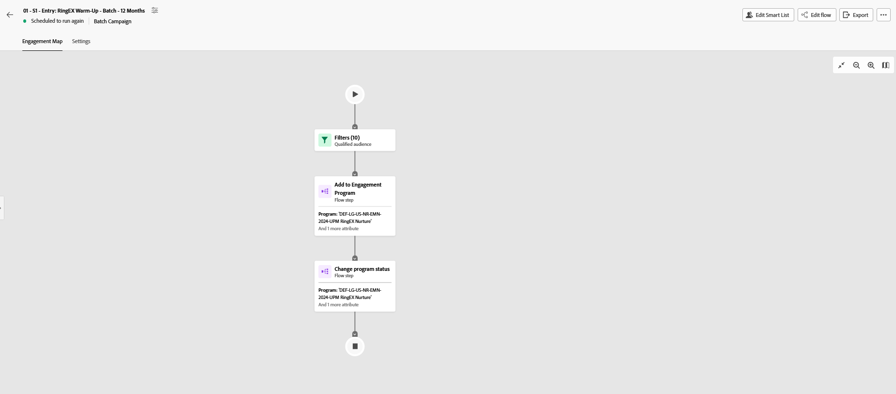
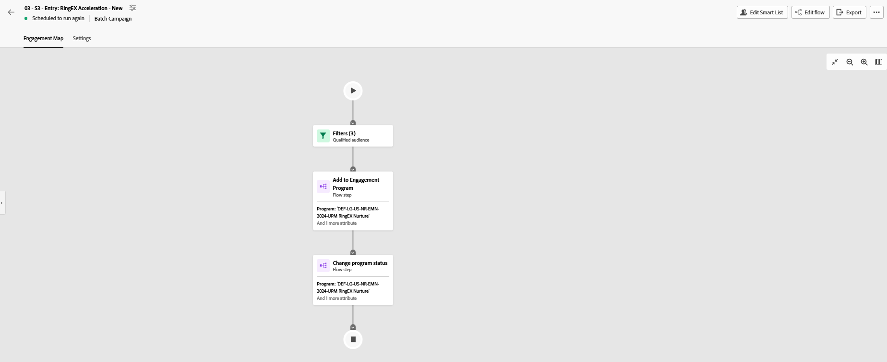
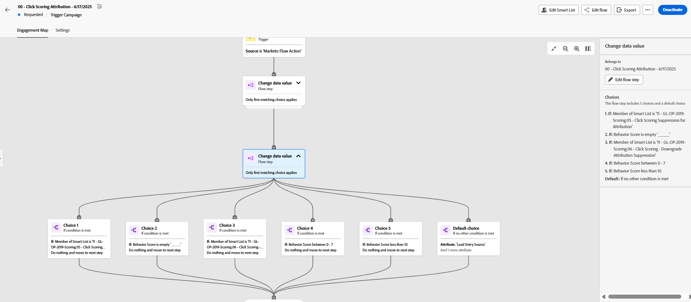
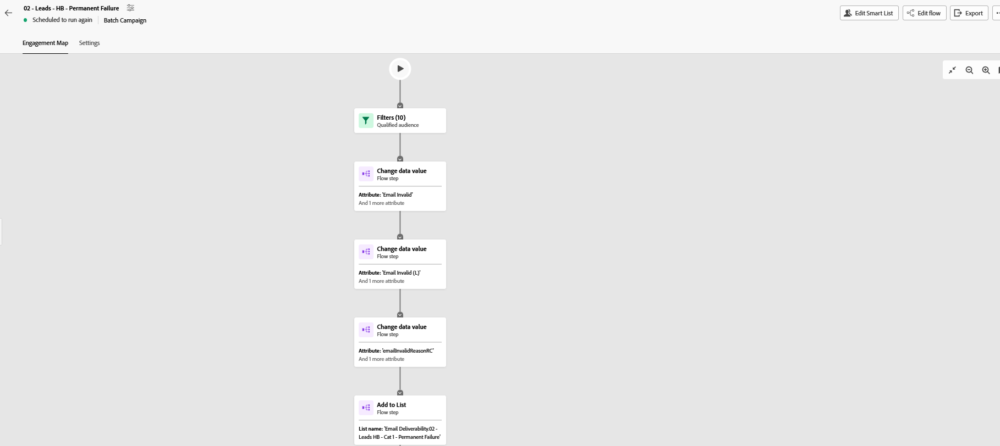

I am a Marketing Automation Specialist bridging the gap between technical infrastructure and growth marketing. Using tools like Marketo and Salesforce, I design seamless campaign workflows, optimize lead data pipelines, and scale engagement.
Proven Business Impact
+30%
Campaign Attendance Optimization
+25%
Rise in Active Customer Engagement
95%
Accuracy in Visual & Technical QA
98%
Complex Operations SLA Resolution
Deep-dives into active campaign architectures, segmentation logic, and data sync execution.
Designing strategic multi-channel nurture tracks to consistently advance prospects through functional lifecycle stages, managing smart list entry rules, and streamlining batch campaign tracks.
Technical Execution Stack:
The Architecture & Strategy
Quantifiable Business Results
Lifecycle Blueprints & Campaign Workflows

1. Funnel Blueprint Mapping
High-level conditional logic layout defining lead validation paths.

2. Warm-Up Setup
Batch processing flow routing filtered targets to 12-month tracks.

3. Acceleration Track
Automated programmatic step processing active validation entry flows.
Protecting database health by standardizing technical attribution routing properties, maintaining complex scoring rules, and isolating system delivery blockages.
Technical Execution Stack:
The Architecture & Strategy
Quantifiable Business Results
Data Logic & Infrastructure Dashboards

1. Click Scoring Attribution Branching
Multi-tier choices determining suppression, downgrades, or value additions based on activity logs.

2. Deliverability Protection Engine
Isolates permanent failures, flags invalid fields, and preserves delivery score metrics.
Categorized proficiencies mapped directly to organizational workflow efficiency.
Acquire - RingCentral — Pasig City
Executing lead generation and lifecycle nurture campaigns across integrated digital channels. Rebuilding core Marketo workflows, monitoring Salesforce data tracking, streamlining multi-team lead routing handoffs, and utilizing monday.com and ClickUp to organize multi-tier marketing roadmap milestones and asset QA pipelines.
Tech Mahindra — Microsoft - Quezon City
Oversaw end-to-end digital event setups via ON24 and Marketo ecosystems, tracking attendee lifecycles, and organizing Microsoft Dynamics tracking architectures.
Remote Virtual Assistant
Conducted exhaustive technical quality performance checks across live tour analytic streams and visual assets.
IntouchCX - Airbnb — Quezon City
Managed complex property damage liabilities and high-stakes fraud risk assessment pipelines securely inside Salesforce Lightning.
Bachelor of Science in Information Technology
Polytechnic University of the Philippines (PUP) — Sta. Mesa, Manila
Graduated Milestone Window: 2018 – 2023